Adjusting lighting
Good lighting is the single most important element needed to take a
good photograph. Unfortunately the lighting conditions aren't
always good for a photographer. There are some things that
can be done by the photographer to work with bad conditions, for
example indoors at very close distances they can use a flash, but often
the photographer will end up with an image that doesn't have correct
lighting.
Typical results are overexposed (when too much light is picked up by
the camera sensor), underexposed (when not enough light is picked up by
the camera sensor), and an image where parts are simultaneously over
and under exposed. (Right-click the link for each picture and
save it to your disk)
Overexposed
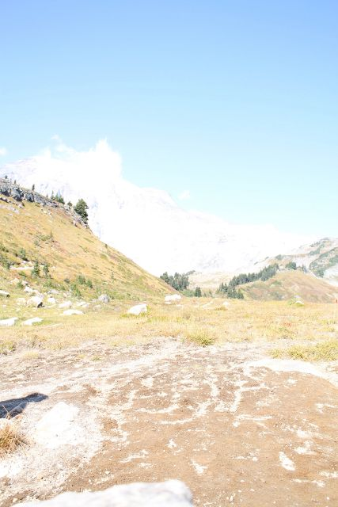
Underexposed
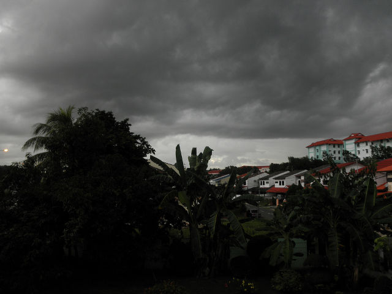
Parts are over and under
exposed.
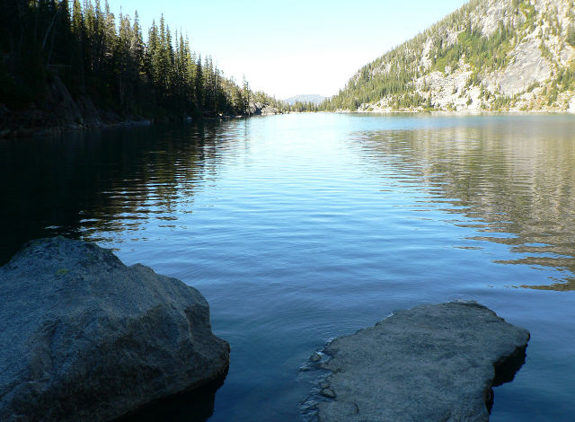
We are going to go through these three images and try to fix some of
the lighting issues with them. Let's start by opening the
overexposed photo in the GIMP.
There are three tools we will look at to fix lighting issues with these
image, the first one is by far the simplest. It it is the
Brightness-Contrast tool. You can open it by clicking the menu
Color -> Brightness-Contrast...

You can see there are two sliders that adjust brightness and contrast
of the image. A way to think of brightness is the average of all
the pixels, the closer they all are to white, the brighter the picture
is http://en.wikipedia.org/wiki/Brightness.
Contrast represents how much difference there is between the pixels in
the image. http://en.wikipedia.org/wiki/Contrast_(vision)
The above image is very bright and rather low contrast. To try to
remedy this, let's use the brightness slider to lower the brightness,
and then the contrast slider to raise the contrast.
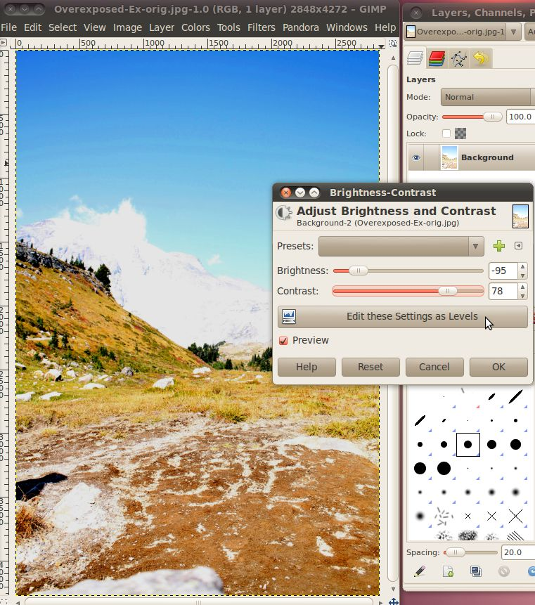
As you can see, modifying the image in this manner will really bring
out the color of the image. Also, you can see more detail,
like the features of the snow-covered mountains in the
background. When you like how it looks, hit OK for the changes to
be written to the image.
For a simple picture such as this, that might be enough, but sometimes
you need a little more control over the picture than just the
brightness and contrast. First, let's re-set the picture, to get
back to the unaltered version we can just undo (Ctrl+Z) enough times
to remove all the changes we've made, or we can simply click File ->
Revert to get all the way back.
Once we're back to the beginning, we will modify the image again, with
a higher level of control this time.
To get to this next level of control, we'll use the Levels dialog, by
selecting the Colors -> Levels menu.

There are three important parts of this tool that we will focus
on. The first is the "Channel" drop down. If you click this
you will see the options for "Value", "Red", "Green", "Blue", and
"Alpha" which is grayed out. We won't be using the R, G, B, or A
channels here, but just be aware that you can do the same thing we are
going to learn about in a moment to any of the color channels by
themselves.
Here, we're going to focus on the value channel. Selecting the
value channel causes the tool to combine all three color channels into
one
and work with it in that manner. This value channel can be thought of
as
the same image if it was converted to 8-bit black and white. This
mode is really called "grayscale" because there can be 256 different
levels of gray. Here's the image actually converted to grayscale
as an example.
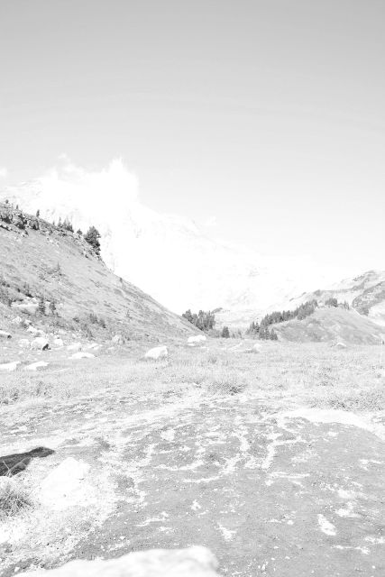
Notice how the image is very bright, almost white. Even the dark
areas are only very light gray, definitely not black.
Looking back at the previous example with the brightness-contrast
dialog, we can now get a clearer understanding of what it was
doing. The decreasing the brightness changed the all the
different shades of the above image to a darker shade of gray and
increasing the contrast made the darkest part of the image more dark
while leaving the lightest part alone. The only difference is
that the GIMP didn't need to have a grayscale image to do this, it
could mathematically determine the levels that would correspond to the
gray image for the different colors, called the values.
In the box below the channel selection under the title "Input Levels"
is a graph that is called a histogram. This histogram tells us
the number of pixels in the image that correspond with each
value. Below the histogram is a gradient from black (left) to
white (right), this gradient is actually the scale for that axis of the
graph. So, the height of the graph over a particular value along
that gradient corresponds with the number of pixels that have that
value. Because this image is so overexposed, the graph shows that
almost all the pixels are to the very far right (white) part of the
graph.
Before we move on, let's look at a picture with a more normal
histogram.

As you can see from the grayscale image on the right, a lot of the
image, where there is the grass background, is rather dark, but not
quite black. Most of the birds is rather light, but only a tiny
section of them is really white. Thus we see a huge part of the
graph in the dark section, about a quarter of the way up the
graph. We see another peak towards the right where the birds'
bodies are, and just a tiny amount trailing off to the completely black
and white sections at either end of the graph.
Getting back to our overexposed picture from the mountains, we can see
that the histogram shows that it is almost all completely to the right
(white) side of the graph.

In fact, the true white (value of 255) has quite a few pixels.
That means that these pixels are completely over exposed (also known as
burned), and the areas where there are a lot of these can never be
corrected to add more detail. Any information that the camera may
have found about them was lost because they are at the maximum
value. That is just the limit of the 0-255 scale. However,
we can use our tools to bring out some more detail on all those other
pixels.
For more details about histograms, check out this great website: http://www.cambridgeincolour.com/tutorials/histograms1.htm
You will notice under the histogram there are three triangles. We
can use these triangles to set the darkest color in the image, the
brightest color in the image, and the middle color in the image.
To help fix this image, we are going to move the darkest color
up. This will cause all the pixels represented in the histogram
to the left of where we move the arrow to have their value to set to
zero or true black. Every other pixel everywhere else in the
image will have
its value reset so that they take up the entire range from 0 to 255
while keeping their existing relationship to all the other
pixels.

There, that looks a lot better, we can see all the color of the
foreground and make out some features on the mountains in the
background. There's one last adjustment we can make here, and
that is to change the mid level to tone down some of the bright
brown/red colors that have taken on an almost unnatural
appearance. Just slide the middle, gray triangle a bit back to
the left and check the results.
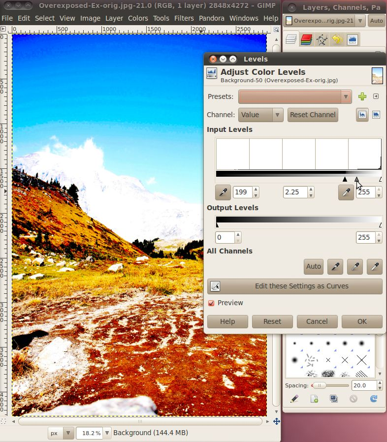
There, that looks pretty good. When you're happy with your
settings, click OK to write them to the image.
Now there's one more tool that we can use that will give us even more
control over those colors in the middle, that is the curves tool.
After re-setting the image back to the beginning (either use Ctrl+Z or
Revert) click Color -> Curves to bring up the dialogue.

You can see in the background that it has a histogram on it. The
only difference is now there is also a gradient on the vertical axis,
that corresponds to the line running across the graph. This line
is the curve that we will be manipulating. The end of the curve
that is on the bottom side of the window corresponds to the dark
triangle from the levels dialog, and the end of the curve that is on
the upper side corresponds to the white triangle from the levels
dialogue. The whole curve in the middle is a much more
complicated version of the gray triangle from the levels
dialogue.
We can go ahead and set the low end back up to where we had the dark
triangle in the previous example. Once that is done, we can click
and drag any point on the line going through the graph to create curves
in it. This allows different values in the image to be raised and
lowered differently. You can drag multiple parts of the curve to
make complex systems of lightening and darkening different original
values.

Here I have moved the low end value up about two thirds of the way
across the graph, then the curve jumps a little bit and then levels off
giving a dark (but not completely black) value to the pixels near that
end. The curve then increases in the lighter pixel values keeping
them steadily
increasing in lightness up to white.
From the curves dialog you can quickly and easily play around with lots
of different values for the image until you have exactly what you
want. Then just click OK to write the change to the image.
Now that we've got all the tools in hand, let's go and try this on the
underexposed example. Let's open it up in the GIMP and jump
straight
to the curves dialog.

Here we can see that the histogram is quite a bit broader than it was
for the overexposed image. This would have held us back a bit if
we were just using the brightness-contrast or levels dialogs, but not
in the curves dialog. The first thing we should do is lower the
highest value down a bit, to about where the histogram starts trailing
off. Just click on the circle along the top and drag it left
keeping it on the top until it is over the end of the histogram.
The next step is to bring out some of the color in the dark
shadows. We can do this by increasing the brightness of the curve
while it is in the further left areas of the graph.
Continue to experiment with this until you find something that looks
good to you, then hit the OK button.
Finally, let's open up the image that has parts both over and under
exposed. When we've got it open, we can see that there is a
section on the left, in the trees that is almost completely dark, while
at the same time the mountains on the right are too bright and washed
out.
If we go and open the curves dialog we can try to lower the brightness
on the bright parts, and raise it on the dark parts, that makes it a
little better, but still doesn't make the image look that great.
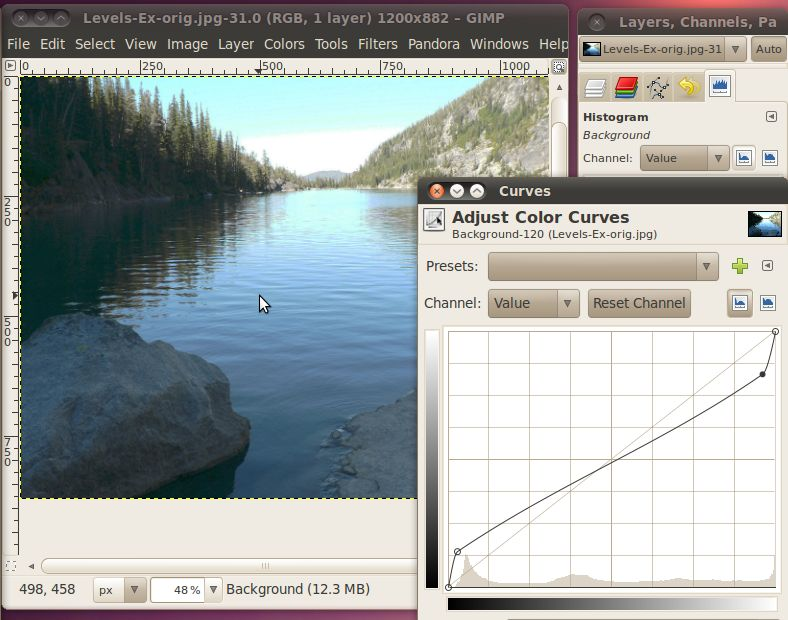
Instead, what we need to do is lower the highest possible brightness
for the dark parts, and raise the lowest possible dark for the bright
parts. But how can we do that all in the same image? The
trick is that you can use the curves (and levels and
brightness-contrast) tool on selections
of an image instead of the whole image. So all we have to do is
select the dark part, perform a correction there, then select the
bright parts and perform a different correction there.
To do these selections we'll give the fuzzy select tool a try.

Once we have it selected, we click on a pixel in the area we want to
select, then while holding the mouse button down, move the mouse down
and left to grow the area. The Fuzzy Select tool will
automatically grow the area in a way where it selects other nearby
pixels that have a similar color or value. One tweak that we can
make to this tool is to enable the "Feather Edges" option in the fuzzy
select tool options. This will cause the area that it selects to
blur the line between what is and isn't selected. Doing this will
cause the level adjustments that we are going to make to decrease
around the edges so that you don't get sharp differences between
sections.
So, let's go ahead and pick a pixel in the dark area behind the
trees. While holding the mouse button down, move the mouse down
and to the left, you will see the selected area grow. Keep it
going until you have the dark area in the trees selected, then let go
of the mouse button.
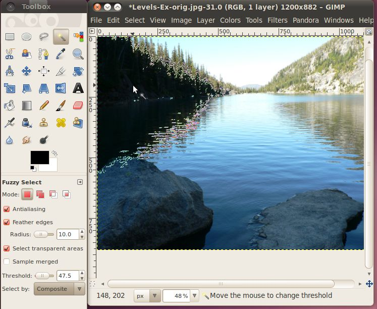
Now that we have our selection made, we can go ahead and bring up the
curves dialog and work our magic.
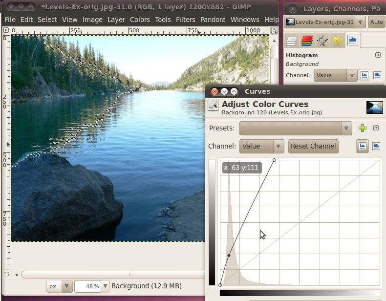
Here I moved the maximum white value down to right where the histogram
trailed off. I also lowered the dark a little bit at the bottom.
Click OK, when you're set.
The next step is to select the bright areas. Again we will use
the fuzzy select tool to select the appropriate area.
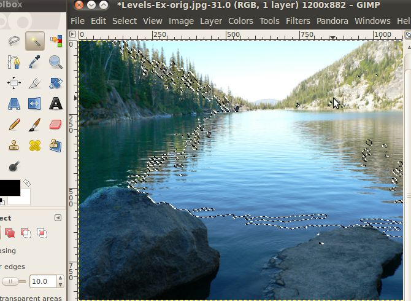
Once we have the selection, we'll open up the curves dialog again, and
make our correction on this area.
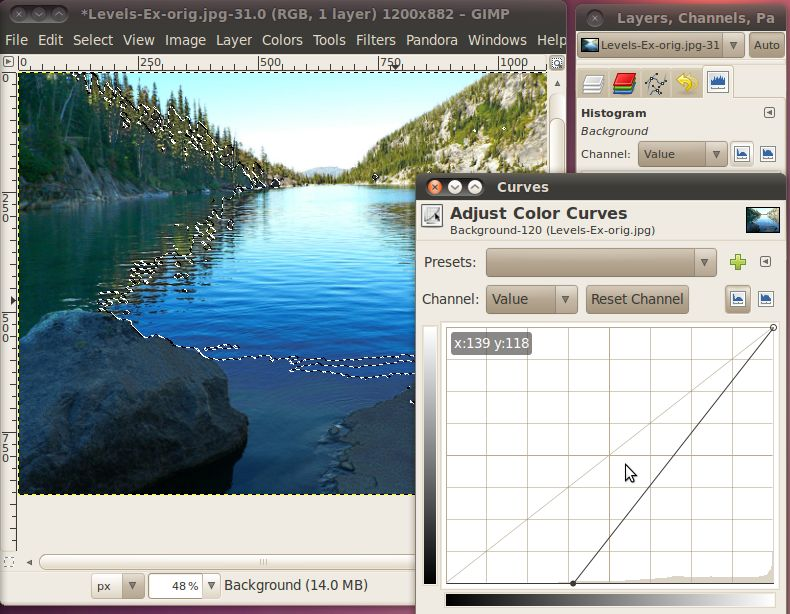
This time I simply moved the lowest dark point up to the bottom of this
histogram. When you're happy with your settings click OK.
And here we have the final image:
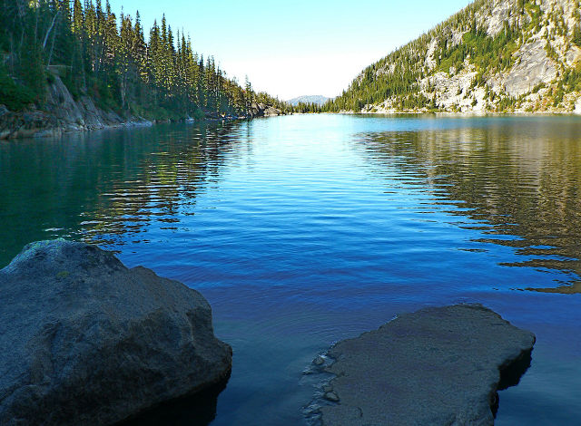
Nice and crisp, with lots of details throughout the image.
Attribution
Overexposed Mountains, avry xvx, http://www.flickr.com/photos/kimclit/4438966573/,
CC-BY-SA
Dark Cloud Over Kota Kinabalu, thienzieyung, http://www.flickr.com/photos/thienzieyung/4829364637/,
CC-BY
Colchuck Lake, Mahalie Stackpole, http://www.flickr.com/photos/mahalie/253842823/,
CC-BY-SA
Mountain, Steve Broomfield, http://www.flickr.com/photos/spikycircle/18070686/,
CC-BY
Large Rock, Homini:), http://www.flickr.com/photos/homini/4327478688/,
CC-BY
Antler Lake 2, Holly Lawrence, http://www.flickr.com/photos/goat_girl_photos/228884109/,
CC-BY-SA